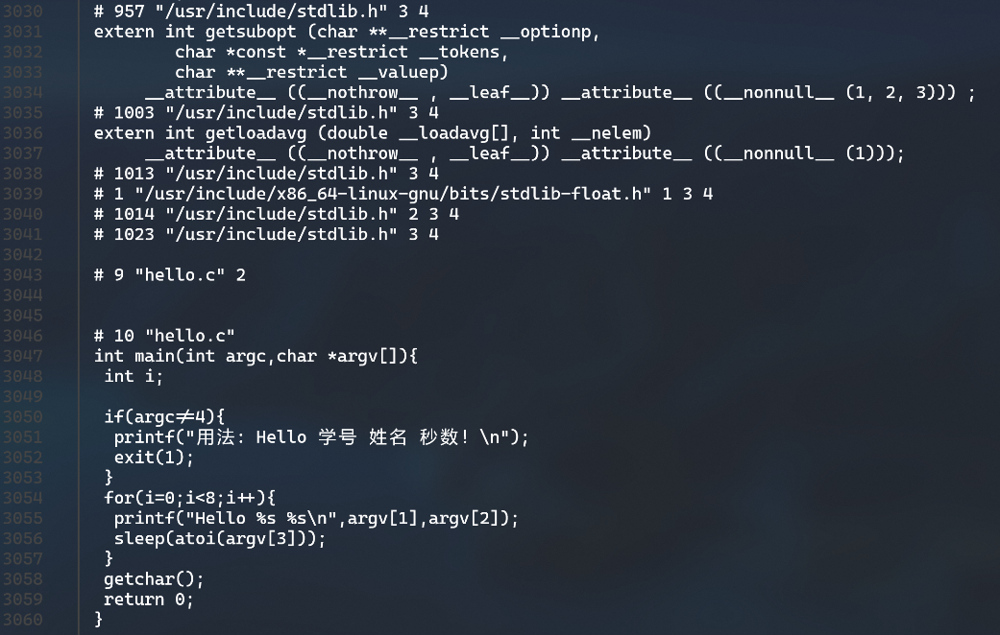
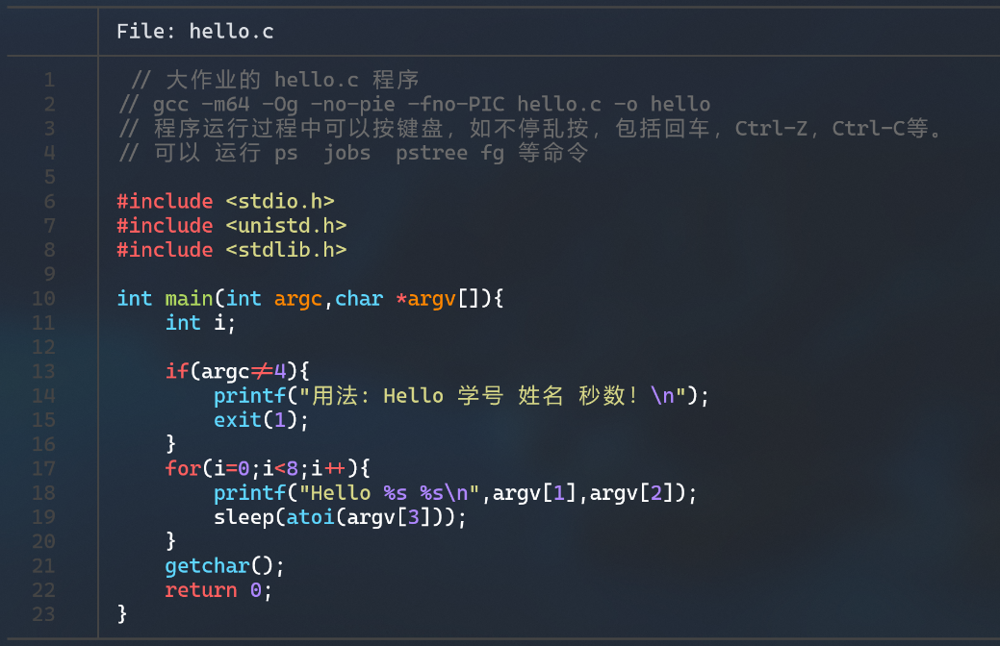
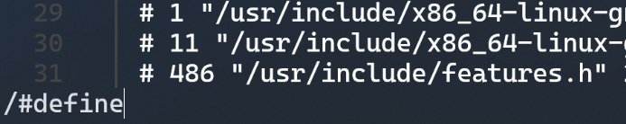
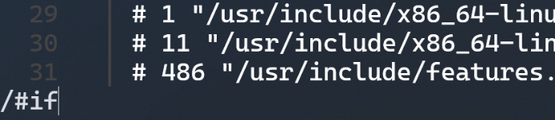
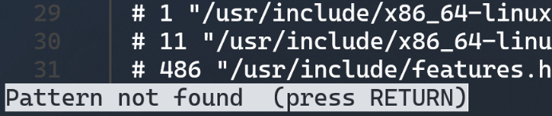

# 第2章 预处理
# 预处理的概念与作用
# 概念
在编译之前进行的处理。处理后的结果仍然是文本文件。
# 作用
预处理器根据以字符#开头的命令，如#define，#include，#ifdef等修改原始的 C 程序：
- 删除#define并展开所有宏
- 递归插入头文件到#include处
- 处理所有条件编译，如#if，#ifdef等
- 删除所有注释
- 添加行号和文件名标识，以便编译时编译器产生调试用的行号
注意到预处理会保留所有#pragma指令，以指导编译器操作。
# 在Ubuntu下预处理的命令
可以用cpp或gcc -E来进行预处理，下图中选择使用gcc -E hello.c -o hello.i进行预处理
预处理后生成的文件最后几行如下

# Hello的预处理结果解析
如图 3 预处理结果示例所示，整个hello.c被扩充到了3060行。
原hello.c如下

可见hello.c中导入了3个头文件，即stdio.h，unistd.h，stdlib.h。在预处理阶段，这三行被替换成了三个头文件的原始代码。
为了验证预处理替换的正确性，尝试在hello.i中搜索#include，#define，#if等指令，如下图


然而都没有搜索到，如下图

证明了预处理阶段替换了所有的#include，#define，#if等指令。
# 本章小结
本章对hello.c进行预处理操作，获得hello.i文件，结合预处理的概念及作用分析了预处理对文本.c文件的相应处理，并对结果进行了相应的解析。